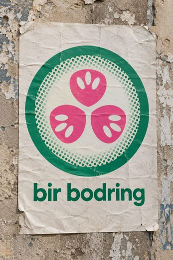
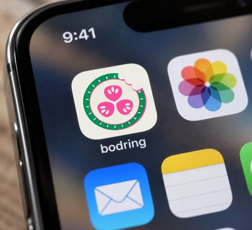
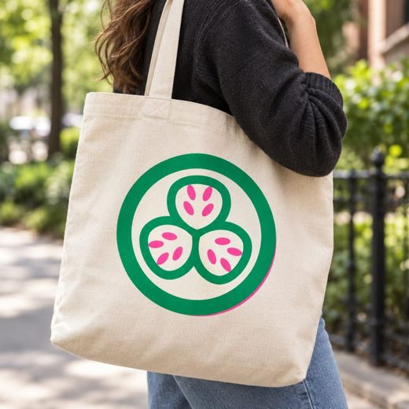
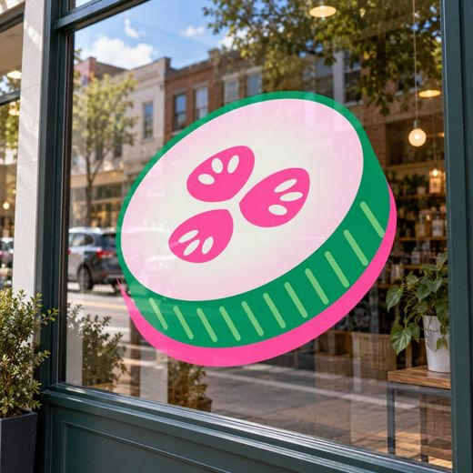

A real run
How bodr.ing got its look and its mark
Bir bodring means “one cucumber” in Uzbek. The Bodring Company knew what it was: an umbrella for a few apps and games. It didn't know how it should look, so it started at step two. A new venture starts one step earlier, with YepNope.
-
OohNah40 looks, 22 yeses
The swipes leaned Uzbek and cultural, techy, premium and playful, with green and print. The clear noes were gritty, pastel and Y2K, and generic SaaS. Three directions came back, and Pickle press won: two-colour riso, off-register, a halftone cucumber.
Bagel Fat One · Work Sans · DM Mono, the page you're reading.
-
Mockups8 marks, 20 photos
Eight concepts from an image model, redrawn as SVG and tried in seven places, from a 16px tab to a one-colour stamp. The four finalists went onto a Tashkent poster, a phone, a tote, a pickle jar and a shop window.




-
ShippedThe stamp
bdringConcept 06 won, 20 out of 21: a green rim fading into halftone around three fat pink seed lobes. It still reads as a cucumber at 16px and in one colour. It is the favicon, and it replaces the “o” in the wordmark. Runner-up was 04 Bite; the mascot and the hand-drawn one looked great big but fell apart small.
The pick and the reason went into
taste.md, so the next agent designs from it instead of starting over.